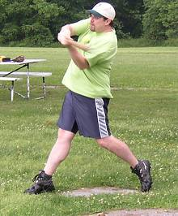
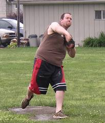
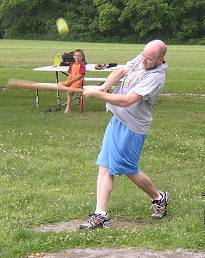
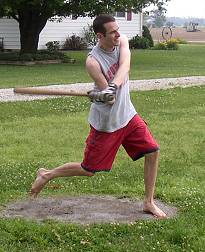
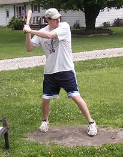
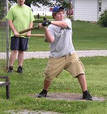
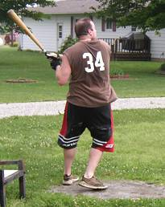
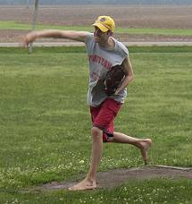

Dave Rueth provided plenty of power in his return as he was 5-for-14 and banged out 3 homeruns and drove in 6. |

Dustin Waldrop took the loss as he was roughed up for 11 runs and 17 hits in his first appearance on the mound of 2007. |

Kevin Ryan blasted a long two-run homerun in the game and finished 3-for-12. |

Patrick Cork went 9-for-15 with 3 triples and a homerun. He also drove in 4 runs and scored 5 times. |

Chris Cork was back on the field for the first time this year and went 1-for-12 with a triple and run scored. |

Evan Woodard was 3-for-15 with an RBI triple and scored two runs. |

Dustin Waldrop watches his third inning homerun sail into left field. Waldrop went 3-for-12 with a two-run homerun in his first action of the 2007 season. |

Patrick Cork struck out 17 batters on the day en route to his second win of the year. He allowed 4 runs and 7 hits over 9 innings of work. |
|